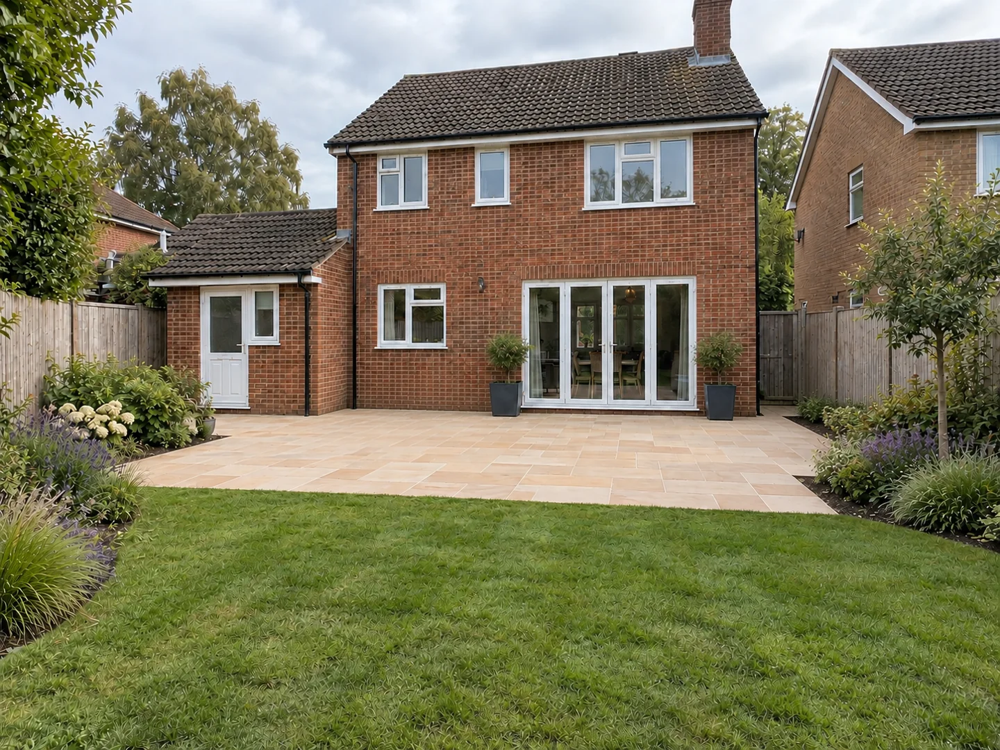
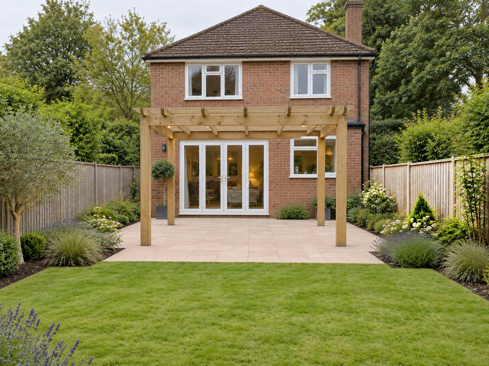
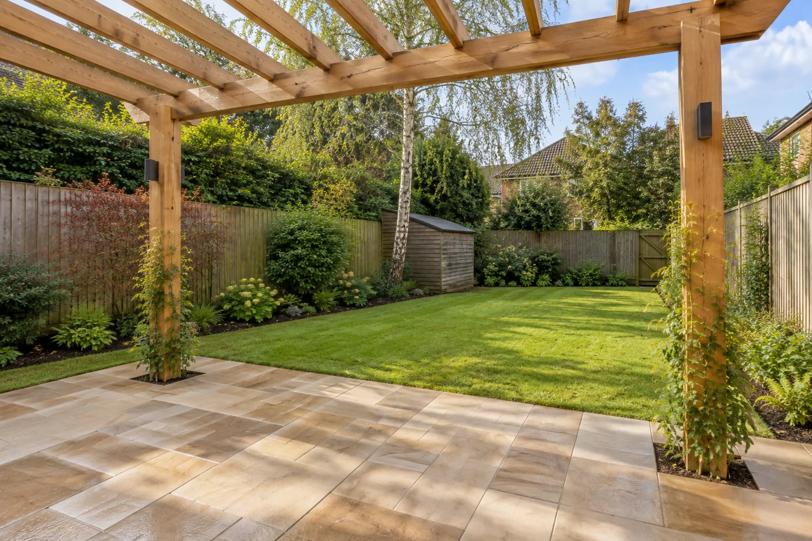
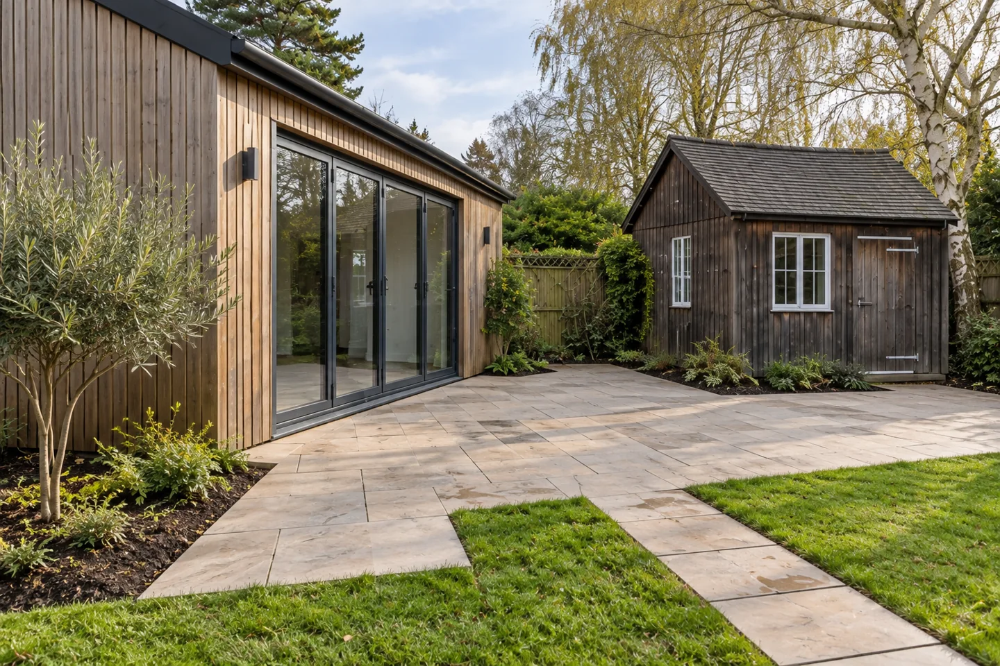
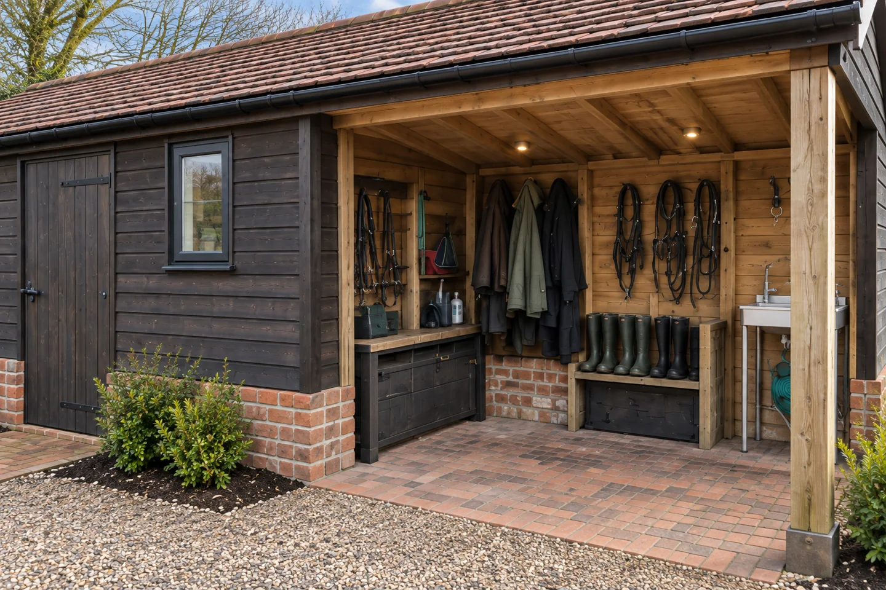
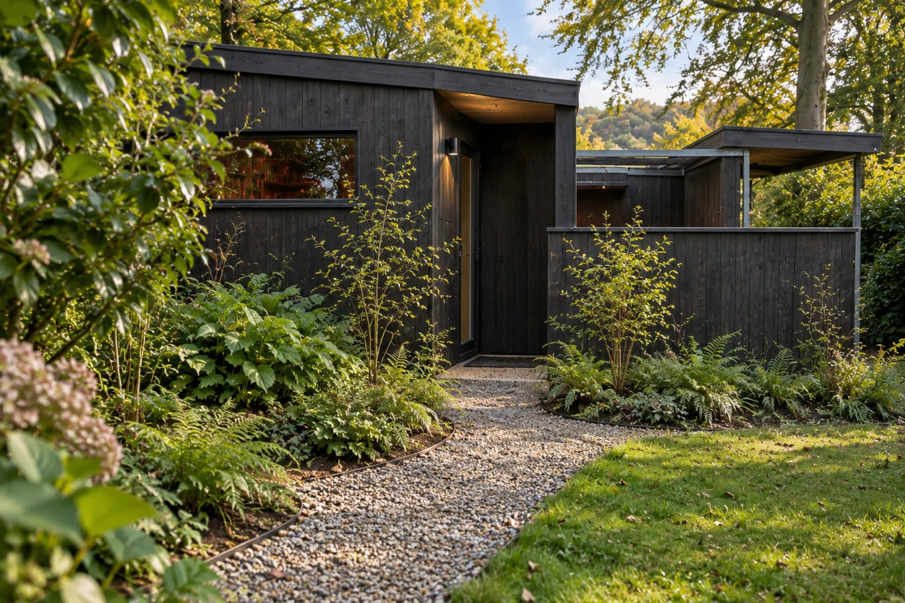
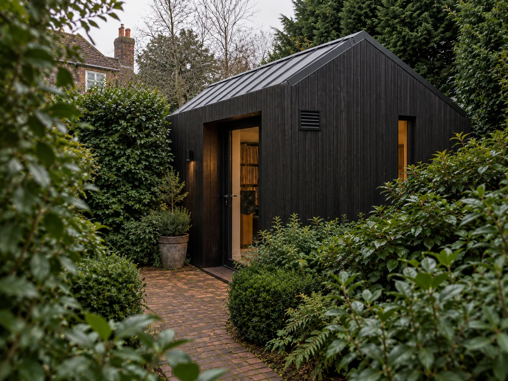

Garden buildings
Garden rooms, home offices, studios, sheds and outbuildings.
We deliver all hard landscaping projects, with garden buildings, decking, gates and fencing as our specialist areas.
From a single improvement to a complete garden transformation, we help you create an outdoor space that works for your home and how you want to use it.
Garden rooms, home offices, studios, sheds and outbuildings.
Practical spaces for relaxing, dining and spending time outdoors.
Garden and driveway entrances designed around access, privacy and the property.
Boundaries and screening that bring privacy, shelter and definition to the garden.
We also deliver patios, pathways, pergolas and wider hard landscaping work.
Design visualisations to help you explore ideas for your garden.









A garden building, new decking, a gate, fencing or a wider landscaping project. Send us your ideas and we will help you work out the next step.
Discuss your project